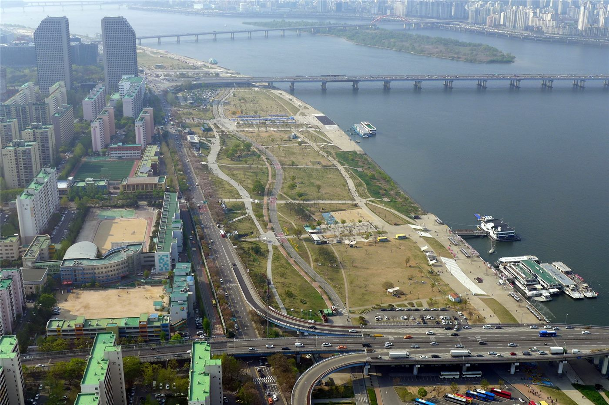

도시와 자연의 경계가 사라진 문화중심… 여의도공원 재조성 밑그림 나왔다
서울 여의도공원을 도시와 자연이 이어지는 문화 중심 공간으로 다시 조성하는 밑그림이 공개됐다. 녹지와 문화 기능을 결합한 재구상이 담겼다.
정가호 기자 · 2026.07.24
橋한국

여의도공원을 ‘도시와 자연의 경계가 사라진 문화중심’으로 재조성하는 구상이 나왔다고 경향신문이 전했다. 녹지·수변·문화 시설을 잇는 개편이 골자다.
광고 문의 · 300×250도심 공원은 시민의 휴식처이자 도시 정체성을 담는 공간이다. 자연과 문화 기능을 결합하려는 시도는, 공원을 단순한 녹지에서 일상적 문화 활동이 벌어지는 무대로 확장하려는 흐름과 맞닿아 있다.
여의도는 금융·업무 중심지이면서 한강과 접한 입지를 지녔다. 공원 재조성은 보행·접근성, 수변 연계, 기후 대응 같은 도시계획 과제와 함께 설계돼야 실효를 낼 수 있다.
다만 대규모 재조성에는 예산과 공사 기간, 기존 이용자와의 조율이라는 현실적 과제가 따른다. 밑그림이 실제 공간으로 구현되기까지는 여러 단계의 검토가 남아 있다.
華橋時報는 도시 공공 공간이 국적과 세대를 넘어 누구에게나 열린 장소가 되기를 기대한다. 잘 설계된 공원은 지역 공동체가 만나고 섞이는 접점이 된다.
출처·참고 (사실 확인용 — 본문은 직접 재작성)
· 경향신문
· 경향신문